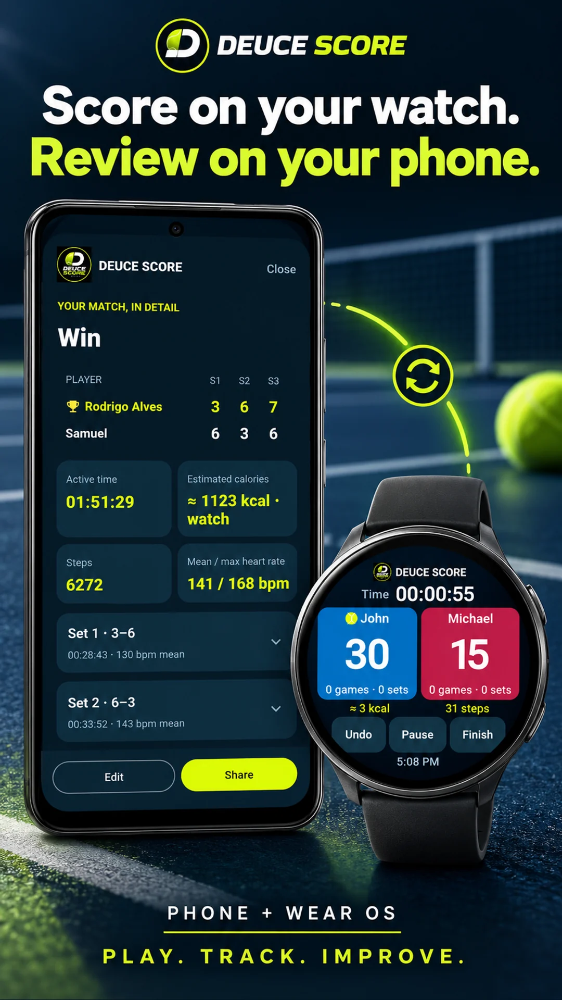
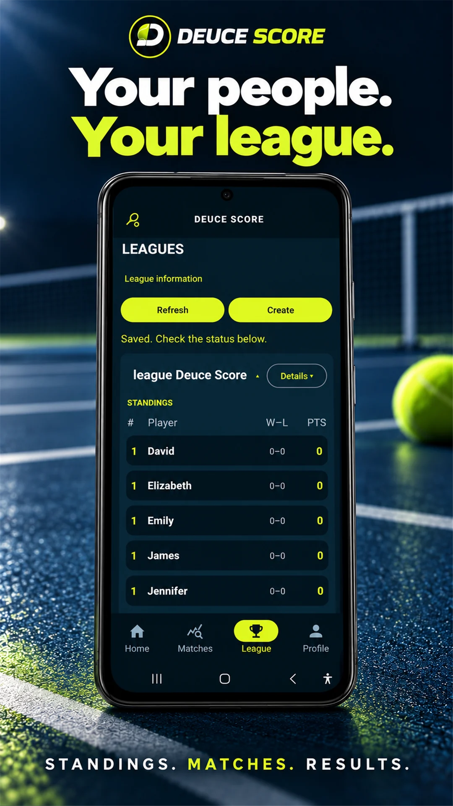
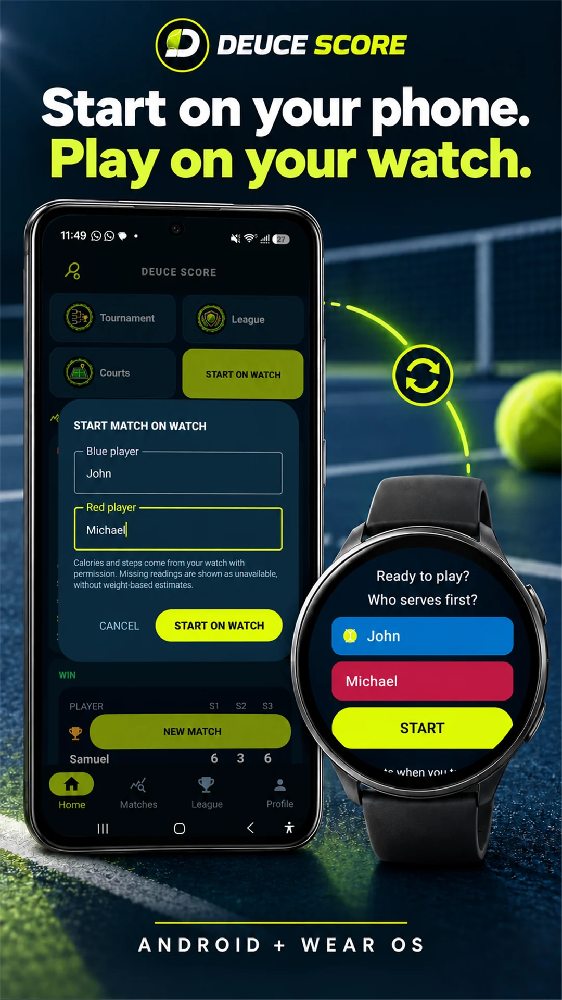
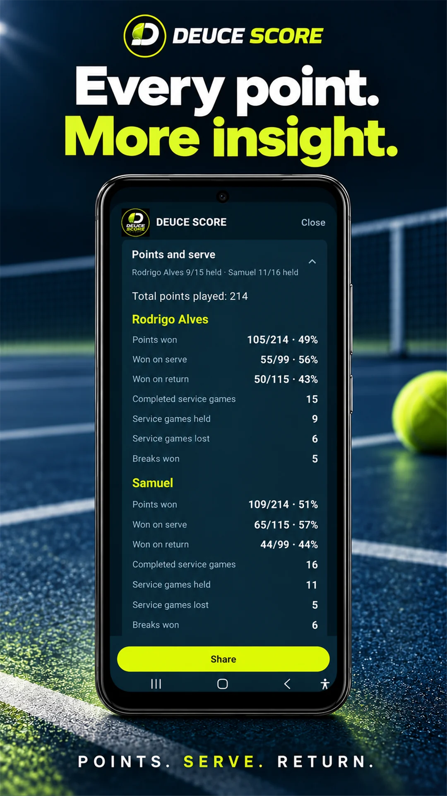

Prepare. Depois, Start.
Abra pelo celular ou direto no relógio. Confira os jogadores e comece quando estiver pronto.
BETA · ANDROID + WEAR OS
Menos “quanto está?”. Mais tênis. Marque os pontos no relógio e leve a história da partida para o celular.
Android 8 ou superior · relógios com Wear OS compatível

NA QUADRA / NO PULSO
Abra pelo celular ou direto no relógio. Confira os jogadores e comece quando estiver pronto.
Azul para um jogador, vermelho para o outro. Acompanhe 15, 30, 40, games e sets, com pausa e opção de desfazer.
Confira o relatório no relógio e envie ao celular. No histórico, ajuste os nomes e mantenha os detalhes da partida.
DEPOIS DO MATCH POINT
No celular, cada partida vira uma lembrança organizada — e uma nova forma de acompanhar a sua evolução.

Marque no pulso. Reveja a partida no celular.

Reúna os participantes e acompanhe a classificação e os resultados.

Prepare no celular, jogue com o relógio e sincronize o relatório.

Entenda seu jogo com estatísticas de pontos, saque e devolução.
1 / 4 · Celular + relógio
Ilustrações com telas do app em inglês. Use as setas ou deslize para explorar.
O JOGO TAMBÉM É COLETIVO
Classificação organizada, pontos e histórico de confrontos em formato de tênis. Convide os participantes usando seus e-mails.
Chaves de 4, 8 ou 16 jogadores. Acompanhe os confrontos até a final, sem perder o caminho de cada resultado.
O criador registra diretamente. Placar enviado por um jogador só conta após a validação do adversário. Partidas avulsas não precisam de validação.
EM TESTES FECHADOS
O Deuce Score está em testes fechados. O lançamento público na Google Play será anunciado aqui.
O app está em testes fechados. O link público da Google Play será disponibilizado aqui após o lançamento.
A versão Wear OS acompanha o app Android. O acesso público pela Google Play será divulgado aqui.
A integração atual é Android + Wear OS. Não há suporte a Apple Watch nesta versão.